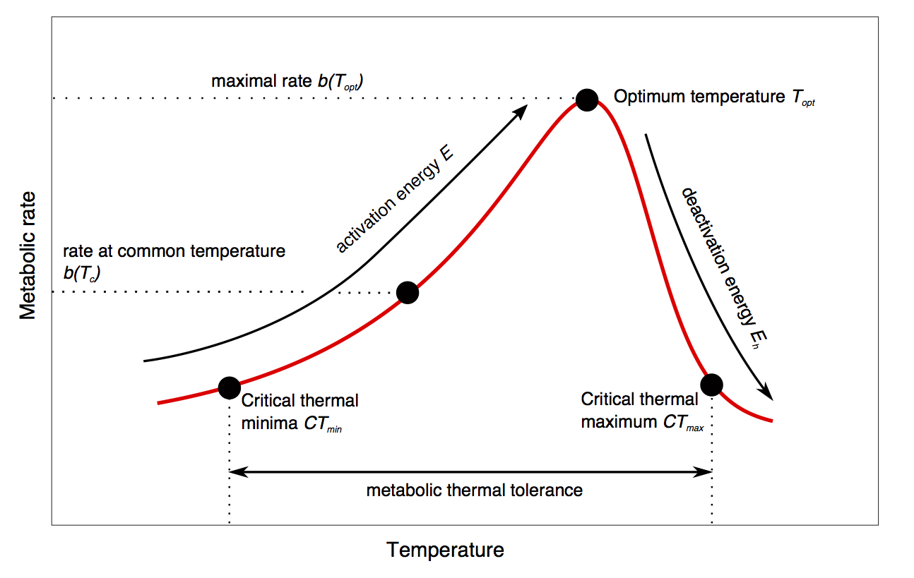
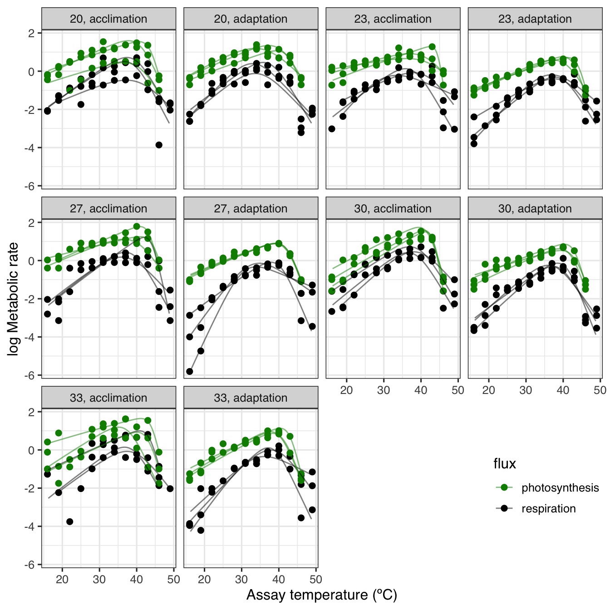
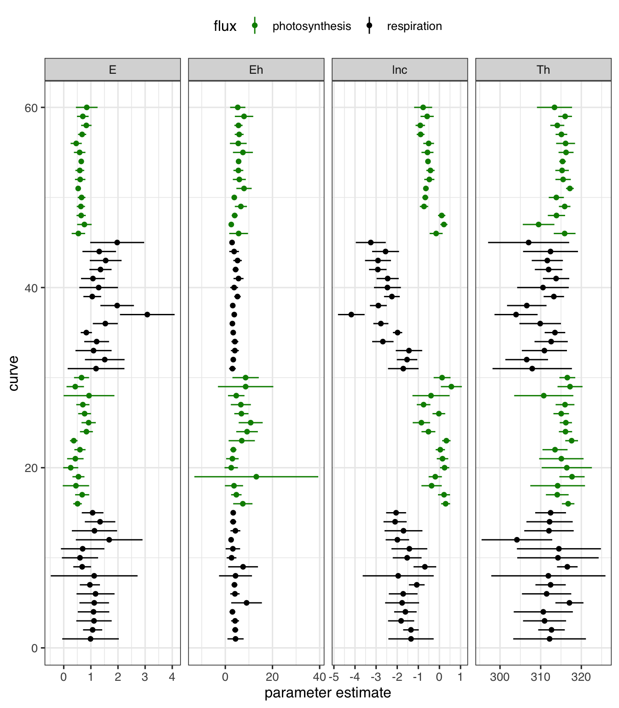

# load packages
library(nls.multstart)
library(ggplot2)
library(broom)
library(tidyverse)
library(nlstools)Introduction
With my research, I often use non-linear least squares regression to fit a model with biologically meaningful parameters to data. Specifically, I measure the thermal performance of phytoplankon growth, respiration and photosynthesis over a wide range of assay temperatures to see how the organisms are adapted to the temperatures they live at.
These thermal performance curves generally follow a unimodal shape and parameters for which are widely used in climate change research to predict whether organisms will be able to cope with increasing temperatures.

These curves can be modelled with a variety of equations, such as the Sharpe-Schoolfield equation, which I have log-transformed here:
\[log(rate) = lnc + E(\frac{1}{T_{c}} - \frac{1}{kT}) - ln(1 + e^{E_h(\frac{1}{kT_h} - \frac{1}{kT})})\] where \(lnc\) is a normalisation constant at a common temperature, \(T_{c}\), \(E\) is an activation energy that describes the rate of increase before the optimum temperature, \(T_{opt}\). \(k\) is Boltzmann’s constant, \(E_{h}\) is the deactivation energy that controls the decline in rate past the optimum temperature and \(T_{h}\) is the temperature where, after the optimu, the rate is half of the maximal rate.
Say I want to fit the same equation to 10, 50, or 100s of these curves. I could loop through a call to nls(), nlsLM(), or use nlsList() from nlme. However, non-linear least squares regression in R is sensitive to the start parameters, meaning that different start parameters can give different “best estimated parameters”. This becomes more likely when fitting more curves with only a single set of start parameters, where the variation in estimated parameter values is likely to be much larger. For example, some curves could have much higher rates (\(lnc\)), higher optimum temperatures (i.e. \(T_{h}\)) or have different values of temperature-dependence (\(E\)).
To combat this, I wrote an R package which allows for multiple start parameters for non-linear regression. I wrapped this method in an R package called nlsLoop and submitted it to The Journal of Open Source Software. Everything was good with the world and I went to a Christmas party.
The next day, I had an epiphany surrounding the redundancies and needless complexities of my R package, withdrew my submission and rewrote the entire package in a weekend to give rise to a single function package, nls.multstart::nls_multstart(). Essentially since I first wrote nlsLoop ~3 years ago I have realised that broom and purrr can do what I wrote clunkier functions to achieve. In contrast, nls.multstart works perfectly with the tools of the tidyverse to fit multiple models.
Multiple model fitting in practice
Load in all packages that are used in this analysis. Packages can be installed from GitHub using devtools.
We can then load in the data and have a look at it using glimpse(). Here we shall use a dataset of thermal performance curves of metabolism of Chlorella vulgaris from Padfield et al. 2016.
# load in example data set
data("Chlorella_TRC")
glimpse(Chlorella_TRC)Rows: 649
Columns: 7
$ curve_id <dbl> 1, 1, 1, 1, 1, 1, 1, 1, 1, 1, 1, 1, 2, 2, 2, 2, 2, 2, 2, 2…
$ growth.temp <dbl> 20, 20, 20, 20, 20, 20, 20, 20, 20, 20, 20, 20, 20, 20, 20…
$ process <chr> "acclimation", "acclimation", "acclimation", "acclimation"…
$ flux <chr> "respiration", "respiration", "respiration", "respiration"…
$ temp <dbl> 16, 19, 22, 25, 28, 31, 34, 37, 40, 43, 46, 49, 16, 19, 22…
$ K <dbl> 289.15, 292.15, 295.15, 298.15, 301.15, 304.15, 307.15, 31…
$ ln.rate <dbl> -2.06257833, -1.32437939, -0.95416807, -0.79443675, -0.182…Next we define the Sharpe-Schoolfield equation discussed earlier.
# define the Sharpe-Schoolfield equation
schoolfield_high <- function(lnc, E, Eh, Th, temp, Tc) {
Tc <- 273.15 + Tc
k <- 8.62e-5
boltzmann.term <- lnc + log(exp(E/k*(1/Tc - 1/temp)))
inactivation.term <- log(1/(1 + exp(Eh/k*(1/Th - 1/temp))))
return(boltzmann.term + inactivation.term)
}There are 60 curves in this dataset, 30 each of photosynthesis and respiration. The treatments are growth temperature (20, 23, 27, 30, 33 ºC) and adaptive process (acclimation or adaptation) that reflects the number of generations cultures were grown at each temperature.
We can see how nls_multstart() works by subsetting the data for a single curve.
# subset dataset
d_1 <- subset(Chlorella_TRC, curve_id == 1)
# run nls_multstart
fit <- nls_multstart(ln.rate ~ schoolfield_high(lnc, E, Eh, Th, temp = K, Tc = 20),
data = d_1,
iter = 500,
start_lower = c(lnc = -10, E = 0.1, Eh = 0.2, Th = 285),
start_upper = c(lnc = 10, E = 2, Eh = 5, Th = 330),
supp_errors = 'Y',
na.action = na.omit,
lower = c(lnc = -10, E = 0, Eh = 0, Th = 0))
fitNonlinear regression model
model: ln.rate ~ schoolfield_high(lnc, E, Eh, Th, temp = K, Tc = 20)
data: data
lnc E Eh Th
-1.3462 0.9877 4.3326 312.1887
residual sum-of-squares: 7.257
Number of iterations to convergence: 15
Achieved convergence tolerance: 1.49e-08nls_multstart() allows boundaries for each parameter to be set. A uniform distribution between these values is created and start values for each iteration of the fitting process are then picked randomly. The function returns the best available model by picking the model with the lowest AIC score. Additional info on the function can be found here or by typing ?nls_multstart into the R console.
This fit can then be “tidied” in various ways using the R package broom. Each different function in broom returns a different set of information. tidy() returns the estimated parameters, augment() returns the predictions and glance() returns information about the model such as the AIC score and whether the model has reached convergence. Confidence intervals of non-linear regression can also be estimated using nlstools::confint2()
The amazing thing about these tools is the ease at which they can then be used on multiple curves at once, an approach Hadley Wickham has previously written about. The approach nests the data based on grouping variables using nest(), then creates a list column of the best fit for each curve using map().
# fit over each set of groupings
fits <- Chlorella_TRC %>%
group_by(., flux, growth.temp, process, curve_id) %>%
nest() %>%
mutate(fit = purrr::map(data, ~ nls_multstart(ln.rate ~ schoolfield_high(lnc, E, Eh, Th, temp = K, Tc = 20),
data = .x,
iter = 1000,
start_lower = c(lnc = -10, E = 0.1, Eh = 0.2, Th = 285),
start_upper = c(lnc = 10, E = 2, Eh = 5, Th = 330),
supp_errors = 'Y',
na.action = na.omit,
lower = c(lnc = -10, E = 0, Eh = 0, Th = 0))))If you are confused, then you are not alone. This took me a long time to understand and I imagine there are still better ways for me to do it! However, to check it has worked, we can look at a single fit to check it looks ok. We can also look at fits to see that there is now a fit list column containing each of the non-linear fits for each combination of our grouping variables.
# look at a single fit
summary(fits$fit[[1]])
Formula: ln.rate ~ schoolfield_high(lnc, E, Eh, Th, temp = K, Tc = 20)
Parameters:
Estimate Std. Error t value Pr(>|t|)
lnc -1.3462 0.4656 -2.891 0.0202 *
E 0.9877 0.4521 2.185 0.0604 .
Eh 4.3326 1.4878 2.912 0.0195 *
Th 312.1887 3.8782 80.499 6.32e-13 ***
---
Signif. codes: 0 '***' 0.001 '**' 0.01 '*' 0.05 '.' 0.1 ' ' 1
Residual standard error: 0.9524 on 8 degrees of freedom
Number of iterations to convergence: 19
Achieved convergence tolerance: 1.49e-08# look at output object
select(fits, curve_id, data, fit)Adding missing grouping variables: `flux`, `growth.temp`, `process`# A tibble: 60 × 6
# Groups: flux, growth.temp, process, curve_id [60]
flux growth.temp process curve_id data fit
<chr> <dbl> <chr> <dbl> <list> <list>
1 respiration 20 acclimation 1 <tibble [12 × 3]> <nls>
2 respiration 20 acclimation 2 <tibble [12 × 3]> <nls>
3 respiration 23 acclimation 3 <tibble [12 × 3]> <nls>
4 respiration 27 acclimation 4 <tibble [9 × 3]> <nls>
5 respiration 27 acclimation 5 <tibble [12 × 3]> <nls>
6 respiration 30 acclimation 6 <tibble [12 × 3]> <nls>
7 respiration 30 acclimation 7 <tibble [12 × 3]> <nls>
8 respiration 33 acclimation 8 <tibble [10 × 3]> <nls>
9 respiration 33 acclimation 9 <tibble [8 × 3]> <nls>
10 respiration 20 acclimation 10 <tibble [10 × 3]> <nls>
# … with 50 more rowsThese fits can be cleaned up using the broom functions and purrr::map() to iterate over the grouping variables.
# get summary info
info <- fits %>%
mutate(., info = map(fit, glance)) %>%
unnest(info)
# get params
params <- fits %>%
mutate(., params = map(fit, tidy)) %>%
unnest(params)
# get confidence intervals
CI <- fits %>%
mutate(., CI = map(fit, function(x)data.frame(confint2(x)))) %>%
unnest(CI) %>%
select(-data, -fit) %>%
rename(., conf.low = `X2.5..`, conf.high = `X97.5..`) %>%
group_by(., curve_id) %>%
mutate(., term = c('lnc', 'E', 'Eh', 'Th')) %>%
ungroup()
# merge parameters and CI estimates
params <- merge(params, CI, by = intersect(names(params), names(CI)))
# get predictions
preds <- fits %>%
mutate(., preds = map(fit, augment)) %>%
unnest(preds)Looking at info allows us to see if all the models converged.
ungroup(info) %>% select(., curve_id, logLik, AIC, BIC, deviance, df.residual)# A tibble: 60 × 6
curve_id logLik AIC BIC deviance df.residual
<dbl> <dbl> <dbl> <dbl> <dbl> <int>
1 1 -14.0 38.0 40.4 7.26 8
2 2 -1.20 12.4 14.8 0.858 8
3 3 -7.39 24.8 27.2 2.41 8
4 4 -0.523 11.0 12.0 0.592 5
5 5 -10.8 31.7 34.1 4.29 8
6 6 -8.52 27.0 29.5 2.91 8
7 7 -1.29 12.6 15.0 0.871 8
8 8 -13.4 36.7 38.2 8.48 6
9 9 1.82 6.36 6.76 0.297 4
10 10 -1.27 12.5 14.1 0.755 6
# … with 50 more rowsWhen plotting non-linear fits, I prefer to have a smooth curve, even when there are not many points underlying the fit. This can be achieved by including newdata in the augment() function and creating a higher resolution set of predictor values.
However, when predicting for many different fits, it is not certain that each curve has the same range of predictor variables. We can get around this by setting the limits of each prediction by the min() and max() of the predictor variables.
# new data frame of predictions
new_preds <- Chlorella_TRC %>%
do(., data.frame(K = seq(min(.$K), max(.$K), length.out = 150), stringsAsFactors = FALSE))
# max and min for each curve
max_min <- group_by(Chlorella_TRC, curve_id) %>%
summarise(., min_K = min(K), max_K = max(K), .groups = 'drop')
# create new predictions
preds2 <- fits %>%
mutate(preds = map(fit, augment, newdata = new_preds)) %>%
unnest(preds) %>%
merge(., max_min, by = 'curve_id') %>%
group_by(., curve_id) %>%
filter(., K > unique(min_K) & K < unique(max_K)) %>%
rename(., ln.rate = .fitted) %>%
ungroup()These can then be plotted using ggplot2.
# plot
ggplot() +
geom_point(aes(K - 273.15, ln.rate, col = flux), size = 2, Chlorella_TRC) +
geom_line(aes(K - 273.15, ln.rate, col = flux, group = curve_id), alpha = 0.5, preds2) +
facet_wrap(~ growth.temp + process, labeller = labeller(.multi_line = FALSE)) +
scale_colour_manual(values = c('green4', 'black')) +
theme_bw(base_size = 12, base_family = 'Helvetica') +
ylab('log Metabolic rate') +
xlab('Assay temperature (ºC)') +
theme(legend.position = c(0.9, 0.15))
The confidence intervals of each parameter for each curve fit can also be easily visualised.
# plot
ggplot(params, aes(col = flux)) +
geom_point(aes(curve_id, estimate)) +
facet_wrap(~ term, scale = 'free_x', ncol = 4) +
geom_linerange(aes(curve_id, ymin = conf.low, ymax = conf.high)) +
coord_flip() +
scale_color_manual(values = c('green4', 'black')) +
theme_bw(base_size = 12, base_family = 'Helvetica') +
theme(legend.position = 'top') +
xlab('curve') +
ylab('parameter estimate')
This method of modelling can be used for different data, different non-linear models (and linear models for that matter) and combined with the tidyverse can make very useful visualisations.
The next stage of these curve fits is to try and better understand the uncertainty of these curve fits and their predictions. One approach to achieve this could be bootstrapping new datasets from the existing data. I hope to demonstrate how this could be done soon in another post.
References
[1] Padfield, D., Yvon-durocher, G., Buckling, A., Jennings, S. & Yvon-durocher, G. (2016). Rapid evolution of metabolic traits explains thermal adaptation in phytoplankton. Ecology Letters, 19(2), 133-142.